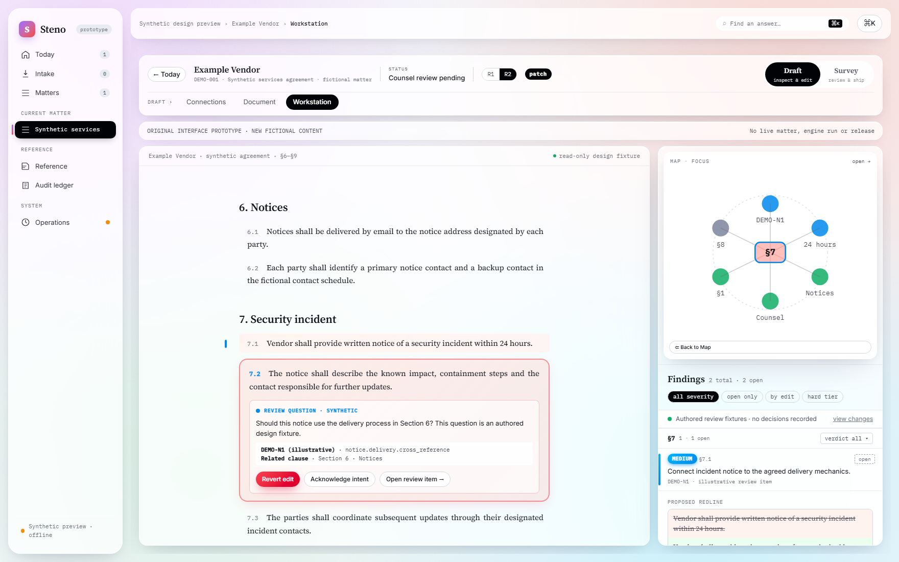
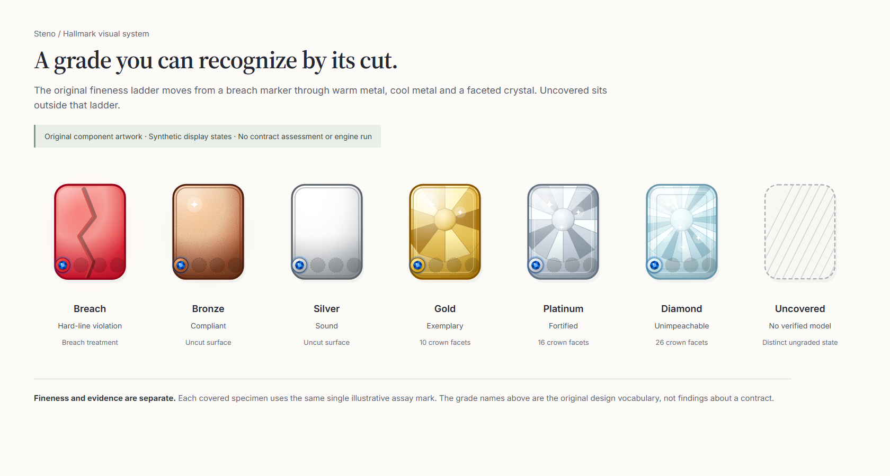
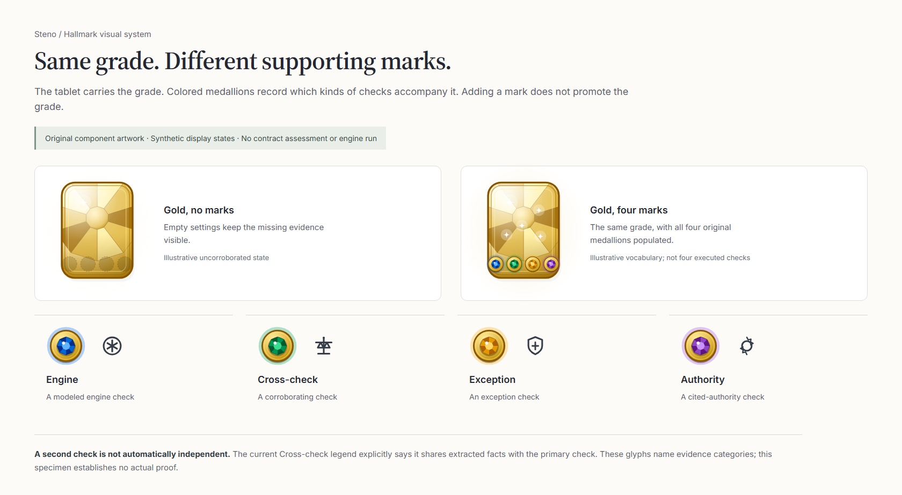
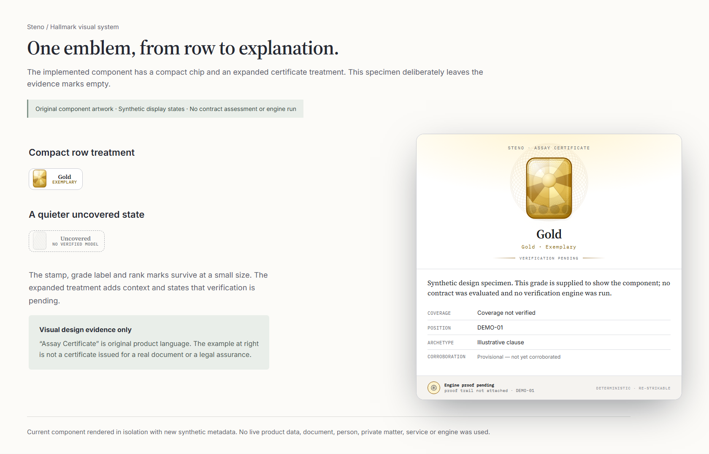

FICTIONAL AGREEMENT§ 7 / Security incident
Party A shall provide
written notice of a
security incident
within 24 hours.
What starts the notice clock?
01 / Steno · Contract review
Prototype / Archived prototype and narrow recorded checks
Keep the contract
and its context together.
I work with contracts. I wanted a way to ask what an agreement would do in a particular situation, then follow the answer back to its language.
Personal experiment / contribution & evidence
A contract question can depend on notice, indemnity and liability terms in different places.
I chose the problem, directed the work and reviewed the results. AI tools wrote the code.
Archived prototype, separate component studies and two narrow synthetic drafting checks recorded September 19, 2026. No deployed legal product.
Party A shall provide
written notice of a
security incident
within 24 hours.
By email to the designated notice address.
Party A indemnifies Party B. A separate illustrative limit.
$100,000 general limit. $300,000 indemnity limit.
The legal decisions stay with the reviewer.
A single contract question can bring notice obligations, indemnity language and liability limits into the same review.
Follow the wording02 / Follow the wording
Reading each clause in isolation makes it harder to see how the wording interacts. The two recorded drafts below show one small part of that problem.
Section 7 creates the fictional notice duty shown above. But where does the notice go?
Notices shall be delivered by email to the notice address designated by each party.
This is the related wording from the same four-clause record.
The saved check flags Section 7 because it does not point to Section 6. Whether the general Notices section applies anyway is for the reviewer to decide.
Recorded check / not a model inferenceThe proposed notice clause adds:
in accordance with the Notices article.
The same notice check then has no finding. The complete proposed draft is available below.
The fixed check does not settle that question, check the facts or decide how the parties should allocate risk. A person must still review the agreement.
No approval or legal clearanceA replay of saved results, not a running drafting engine.
For this presentation, the recorded party labels have been replaced with Party A and Party B. The remaining clause wording and recorded findings are unchanged.
The two checks flag a notice clause that doesn't point to how notice is delivered, and a liability limit that doesn't say how it relates to the indemnity.
Notices shall be delivered by email to the notice address designated by each party.
Party A shall provide written notice of a security incident within 24 hours.
Party A shall indemnify Party B against covered third-party claims, subject to a separate $300,000 limit.
Aggregate liability shall not exceed $100,000. Indemnification is addressed in Section 8.
Two fixed checks, four hand-entered clauses. Two findings before the edits, none after. Neither check uses an AI model. Zero findings from two checks does not clear an agreement.
03 / The workspace direction
Steno brings the document, its connections and the questions under review into one place. These are genuine saved views of the archived prototype, with made-up content.
The authored map puts the incident notice next to the Notices section. This is an archived interface fixture, not an automatically inferred connection.
Inspect the unchanged full map ↗The original inspector says, “Connect incident notice to the agreed delivery mechanics.” Its review questions were authored for the interface. They are separate from the two saved checks above.
Read the full original inspector ↗
The workstation ties the illustrative review item to a named related clause: Section 6, Notices. That preserves a route back to the wording; it does not record a decision.
Inspect the unchanged workstation ↗A reviewer should be able to return to the language behind a question.
A notice requirement and its delivery rules can sit in different sections.
A fixed rule cannot check the facts, weigh the tradeoff or sign off.
Archived interface recording
37 seconds, silent. Original interface, made-up agreement. This is an archived capture, not live product operation.
Open the original text track for the exact timed captions.
04 / A separate component study
The Hallmark is Steno's emblem for a grade and its backing. These current component boards are separate from the archived workspace and the two drafting checks.

The original study separates an uncovered state from the grade ladder. These are design specimens, not findings about an agreement.
Inspect the unchanged grade board ↗
The same Gold specimen appears with and without marks. The marks name categories of evidence; this board is not proof that four checks ran.
Inspect the unchanged evidence board ↗
The expanded original names the gap: coverage is not verified, corroboration is provisional and engine proof is pending. The native wording here keeps those limits readable on a phone.
Inspect the unchanged chip/detail board ↗Component artwork with made-up inputs; no engine invocation, document assessment or legal certificate. Select any board to inspect its full-resolution original.
05 / What I brought to the work
I decide what each project is for and check what comes back. AI tools write the code. The legal decisions stay with the person reviewing the contract.
The contract and its matter in one place, with connections you can follow and the legal decisions left to the reviewer.
AI tools built the workspace design, rendered the exhibits and ran the two recorded drafting checks. This visual prototype is a separate website presentation.
Two findings on the initial draft. None from the same two checks after the illustrative edits. This is a narrow recorded result, not a clearance or a general reliability claim.
A recorded correction / 20 September 2026
The public research record preserves a correction: an earlier write-up overstated Catala as verifying a clause. Design review corrected its role to checking the structural soundness of curated models.
That does not show computation from arbitrary contract prose, or legal correctness. This correction concerns the research/build account, not the two September drafting checks.
Read the original correction / formal_engines → Catala ↗On 19 September 2026, two checks ran on four clauses entered by hand as structured data. Steno did not read a document file or build the clause connections itself. Neither check uses an AI model, and eFLINT, Catala and clingo did not run for this example.
The original JSON retains its recorded party labels. Only the presentation uses Party A and Party B; the remaining clause wording and recorded findings are unchanged. The amounts, the 24-hour period and the edits are illustrative, not recommended terms.
The workspace images and recording show an archived prototype; the Hallmark boards show a separate component study. All use made-up content, not real agreements or matters. Steno is unfinished, its source is private, and nothing here demonstrates a deployed legal product.
The new hero composition, chapter motion and page layout are original conceptual website presentation. They are not screenshots of Steno or evidence of new product behavior. No new model or drafting-check run was performed for this prototype.
Steno started with contract questions and with published research. I had AI agents work through papers collected in Zotero, a reference manager. One recorded sweep ran 46 searches and had to look for evidence against the idea as well as for it. The agents then checked in Scite, a citation database, whether later papers supported or disputed them. Scite's quota ran out partway through, and the papers it hadn't reached were marked unverified.
At its center, Steno is designed to check an agreement's structured parts against a library of positions, using fixed rules that give the same result every time. Language models only help at the edges, for example sorting documents or putting findings into plain English. A model never decides what changes in a document, which redline to use, or whether a result goes out.
For some hand-picked clauses, the design adds three existing tools made by others, each for one narrow question: what duties a clause creates and whether one is breached (eFLINT), whether a hand-built model of the clause is sound (Catala), and whether an exception overrides an obligation (clingo). Recorded runs from May 2026 used each tool in the private build on one clause family, limitation of liability. Doing this for any clause in ordinary prose is future work.
The build used Epistemic Skills, the set of working methods for AI agents shown elsewhere on this site. Its adversarial review step, where AI reviewers try to break a claim, caught an earlier write-up overstating what Catala verifies; the correction is kept in the record.
This is a private design direction for review.
Draft wording remains for Zach’s review before publication.
For this presentation, the recorded party labels have been replaced with Party A and Party B. The remaining clause wording and recorded findings are unchanged.
The two checks flag a notice clause that doesn't point to how notice is delivered, and a liability limit that doesn't say how it relates to the indemnity.
Notices shall be delivered by email to the notice address designated by each party.
Party A shall provide written notice of a security incident within 24 hours.
Party A shall indemnify Party B against covered third-party claims, subject to a separate $300,000 limit.
Aggregate liability shall not exceed $100,000. Indemnification is addressed in Section 8.
Section 7 requires notice but doesn't say it must follow the delivery rules in Section 6. The check flags the missing link. Whether the general Notices section applies anyway is for the reviewer to decide.
Section 9 mentions indemnification without saying whether indemnity sits under that limit or outside it (a carveout). The reviewer needs to settle how the general limit relates to the separate indemnity limit in Section 8.
The edits point the incident notice to the Notices section and carve indemnity out of the general limit.
Notices shall be delivered by email to the notice address designated by each party.
Party A shall provide written notice of a security incident within 24 hours, in accordance with the Notices article.
Party A shall indemnify Party B against covered third-party claims, subject to a separate $300,000 limit.
Aggregate liability shall not exceed $100,000, excluding indemnification obligations. The separate indemnity limit in Section 8 applies to those obligations.
After the edits, neither check flags anything. The two drafting patterns they look for are gone; whether the agreement works is still the reviewer's call.